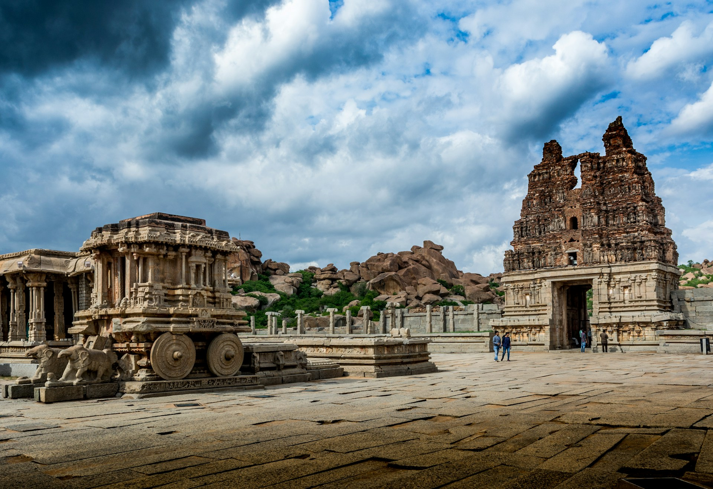
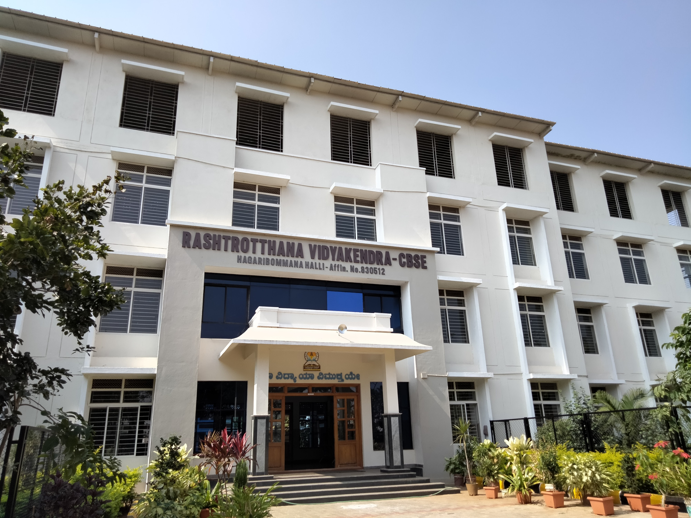
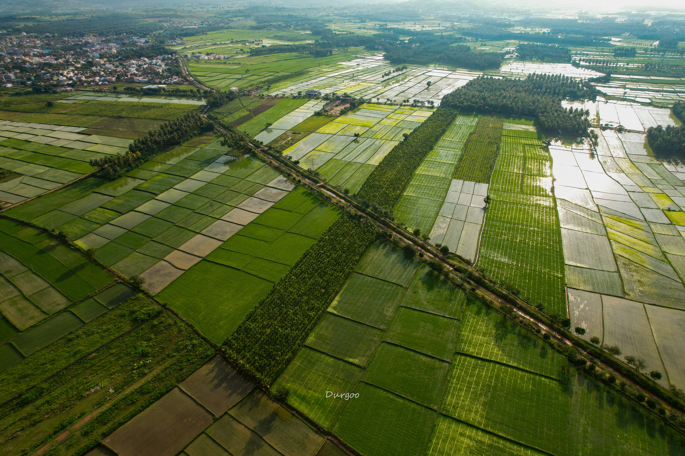
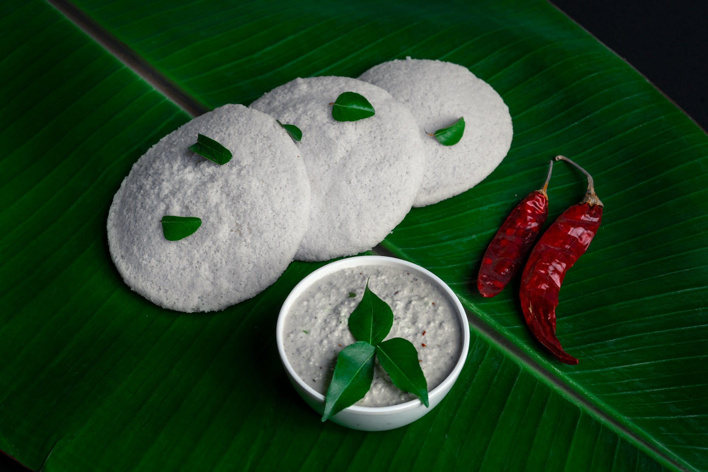
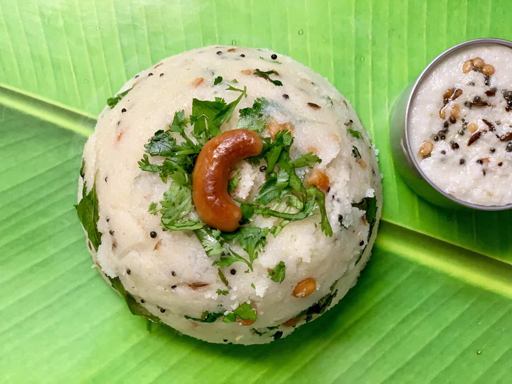

üèûÔ∏è Amazing Places to Visit
Group of Monuments at Hampi
Ancient temples and monuments. Grand architecture.
Mysore Palace

Indo-Saracenic architecture. Illuminated at night.
Jog Falls

High waterfalls. Spectacular monsoon view.
Hagaribommanahalli
Home of Vidhatri.
Malebennur
Vidhatri's native place.
Tungabhadra Dam

Impressive dam with scenic views.
üçΩÔ∏è Delicious Food to Try
Mysore Pak

Sweet dessert. Gram flour, sugar, and ghee.
Idli
Steamed rice cakes. Served with sambar and chutney.
Upma
Savory semolina dish. Spiced with vegetables.
üéâ Vibrant Festivals
Mysore Dasara

10-day festival. Processions, dance, and music.
Hampi Utsav

Cultural celebration. Dance, music, and fireworks.
Ganesh Chaturthi

Celebration of Lord Ganesha. Decorations and processions.
Gauri Pooja

Festival for Goddess Gauri. Rituals and celebrations.
üéà Fun Fact!
Karnataka has the most tigers in India. A wildlife paradise! üêØ